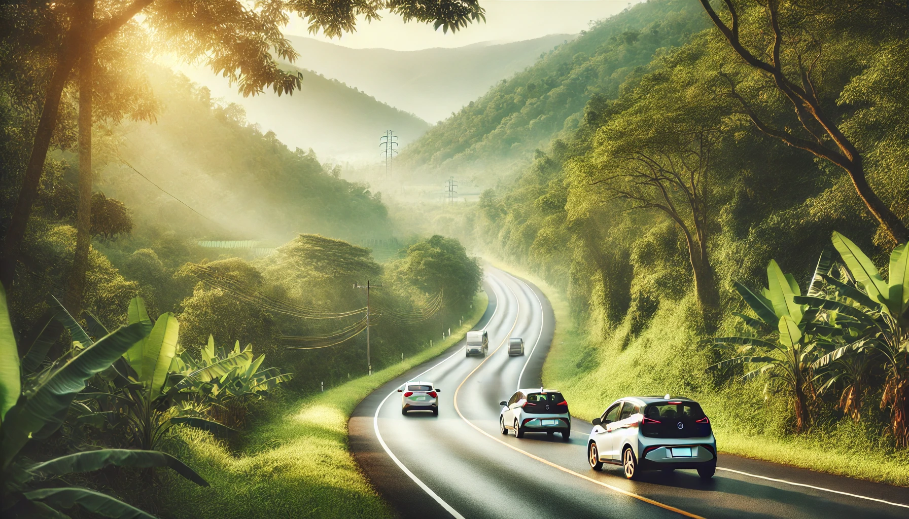

Rouler ensemble, c'est économiser, se rencontrer et surtout protéger notre planète. Avec EcoRide, chaque kilomètre compte pour un futur plus durable.


Avec EcoRide, chaque trajet partagé est un pas de plus vers un avenir plus vert. Ensemble, réduisons notre empreinte carbone et préservons notre planète.